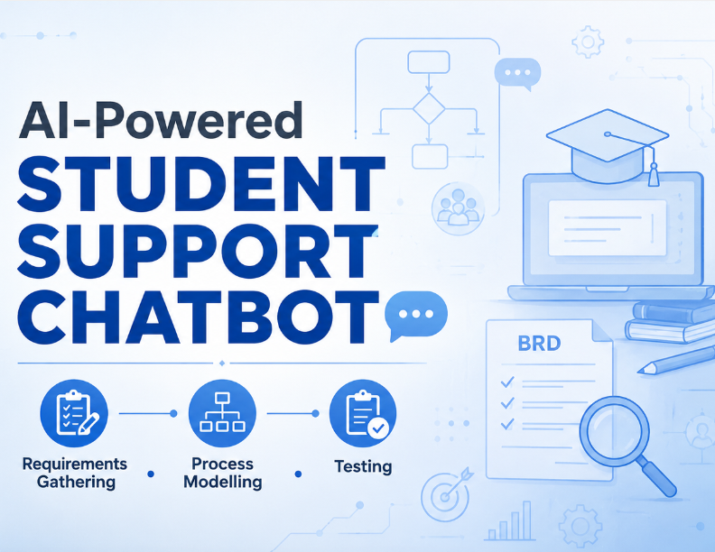

Project Overview

Business Requirements & System Analysis Documentation
Skills
Objective
To analyse existing student support processes and design an AI-powered chatbot solution capable of automating frequently asked questions, reducing response times, and improving the overall student support experience.
Key Performance Indicators
Approach
- Identified business problems and documented stakeholder requirements.
- Developed a Business Requirements Document (BRD) to define project scope and objectives.
- Analysed the current (AS-IS) process and proposed an improved (TO-BE) process.
- Created Use Case Diagrams and Data Flow Diagrams (DFD) to model system interactions and information flow.
- Defined functional requirements and acceptance criteria.
- Conducted risk analysis and established key performance indicators.
- Prepared test scenarios and validation plans to ensure solution quality.
Tools Used
Business Analysis Techniques — Requirements Gathering, BRD Documentation, Process Modelling, Use Case Diagrams, Data Flow Diagrams (DFD), Test Planning, Risk Analysis, and KPI Definition.
Business Analysis Deliverables
| Deliverable | Purpose |
|---|---|
| Business Requirements Document (BRD) | Define scope and requirements |
| AS-IS Process Analysis | Understand existing challenges |
| TO-BE Process Design | Propose an improved workflow |
| Use Case Diagrams | Model user-system interactions |
| Data Flow Diagrams (DFD) | Visualise information flow |
| Test Planning | Validate business requirements |
| Risk Analysis | Identify potential project risks |
| KPI Definition | Measure solution effectiveness |
Key Insights
- Manual student support processes can lead to delays and inconsistent responses.
- Frequently asked questions represent opportunities for automation.
- Process modelling helped identify inefficiencies in the existing workflow.
- Clear requirements and stakeholder analysis are essential for successful solution design.
- Defining KPIs and test scenarios early improves project quality and business alignment.
Business Recommendations
- Implement an AI-powered chatbot to automate repetitive student queries.
- Maintain escalation paths for complex issues requiring human support.
- Continuously monitor chatbot performance through defined KPIs.
- Collect student feedback to improve chatbot accuracy and usability.
- Regularly update the knowledge base to ensure relevant and accurate responses.
Outcome
Designed a comprehensive Business Analysis solution for an AI-powered Student Support Chatbot by documenting requirements, analysing business processes, modelling system interactions, and defining validation criteria. The project demonstrated how structured analysis and process improvement can support technology solutions that enhance service efficiency and user experience.